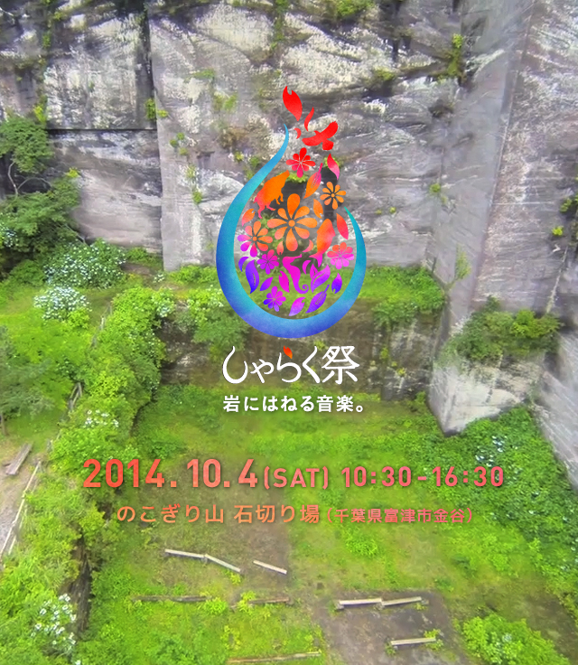

山があって、海がある。自然に恵まれた小さな港町「金谷」。
戦後、他に類を見ない勢いで高度経済成長を遂げた日本。 かつて、ここ金谷は、その礎の一端を担った。
町を見守るようにそびえ立つ鋸山(のこぎりやま)からは、つぎつぎに石材が切り出され、首都圏へ運び出された。
あれから長い年月が経った2014年秋。
石の採掘場は天然の音響ステージへと生まれ変わり、いま再び、人々に満ち満ちた活気を与えるだろう。

公共交通機関でお越しの場合
いずれも都内からは2時間程度。駅名をクリックすると、時刻表が表示されます。
- ＊フェリーはご利用前に、運航状況のご確認をお願いします。
- ＊高速バスをご利用の際は、事前に予約が必要な場合がございます。
- ＊上総湊駅・木更津駅から浜金谷駅への電車は１時間あたり１本程度の運行ですので、ご注意ください。 予め時刻表をご確認の上、お乗り換えください。
お車でお越しの場合
- ＊お出かけ前に、道路状況のご確認をお願いします。
- ＊車でお越しの方は、金谷港有料駐車場(通常1日1回：¥600)か浜金谷駅前有料駐車場(通常1日1回：¥1,000)をご利用ください。
浜金谷駅前有料駐車場をご利用の方は、浜金谷駅前の黒河釣具店に声をお掛けください。
駐車スペースは上記の地図にてご確認の上、指定の場所への駐車にご協力をお願いします。
開催地のご案内
しゃらく祭 前売チケットのお申込はこちらから行ってください。
お申込完了時にお送りする返信メールをお読みになり、指定の銀行口座へのお振込をお願いします。
なお、当日チケットは、前売チケットの価格にプラス700円での販売となります。
＊ 小学生以下、金谷在住の方は無料です。